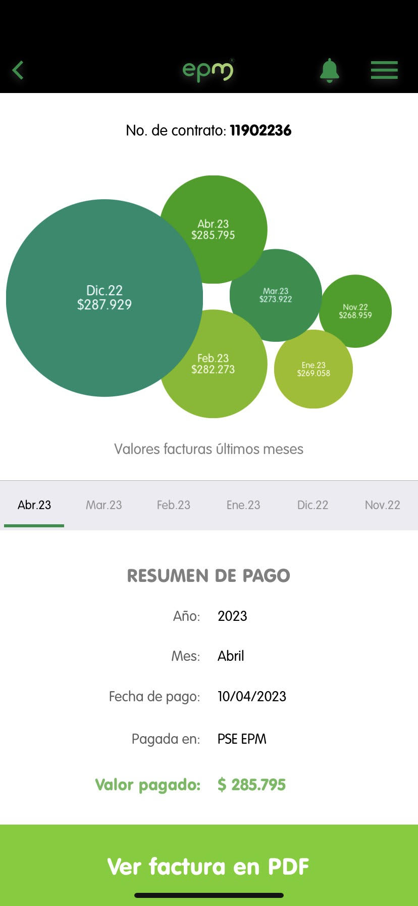

By: Sofia Gil Rivera

Linear regression: kWh vs Month
This second part of the project must be done individual. For each plot, we
show evidence about our bill house public services to proof the information.
About the observed behavior
According to the collected data from the plot, explain why the graphic displays that behavior in terms of:
-
In the graph you can see how energy consumption from month 1 decreased considerably, but from month 2 it was increasing until month 4, and decreases 9 KWH to month 5.
- The relationship between true consumption and the linear regression is that red dots are scattered, while the graphic is negative, according to the scatter plot, referring to the noticeable decrease from month 1 to 2 and from month 4 to 5.
- According to Use Latex formula y= -1.50*6+151.30 the energy that we are gonna consume in the next month is 142.3 whz $$ y = -1.50 \cdot 6 + 151.30 $$ $$ y = 142.3 $$
- In conclusion, the expenditure of electricity in the home should be constant and reduced as in the month 2 and 3, because it would lower the value of the bills each month and contribute positively in terms of reducing its pollution, and later to the impact of climate change and global warming.
Linear regression: Residents vs kWh
About the observed behavior
According to the collected data from the plot, explain why the graphic displays that behavior in terms of:
- The table shows the relationship of consumption of residents of a household and linear regression. It can be noted that in most cases the greater number of people the greater the energy expenditure is, for example, in 5 and 8 residents the consumption is 220 and 650 respectively. In addition, when there are 3 residents, the energy expenditure interval is shorter, as it is between 160 and 190 KWH; compared to when there are 5 people in the home.
- The relationship between true consumption and linear regression is based on the fact that red dots are more accumulated in residents of 3 and 4 people, whereas their linear regression is positive; accounting for a directly proportional relationship between residents and energy spending, because when one increases the other also does.
- According to Use Latex formula y=122.44*200+(-309.18) the energy that 200
people are gonna consume in the next month is 24178.82 whz $$ y = 122.44 \cdot 200 + (-309.18) $$ $$ y = 24178.82 $$
- In conclusion, according to the data collected if there are more than 5 residents the consumption will be higher, but for 3 and 4 residents anyone can have the same, depending on their use and management of devices that harm the environment. Also whether people work at home or not, or if they spend more time at home than outside of it.